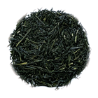
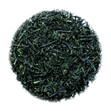
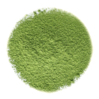
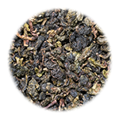
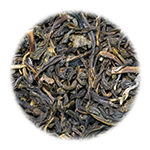

お茶カタログ
お茶を種類別に解説。茶葉以外のお茶もご紹介します。
煎茶

全製茶生産量の約8割と一番多く、もっとも親しまれている緑茶です。煎じたお茶を意味していましたが、実際の製法は生葉を蒸して、揉み、乾燥させたものです。鮮やかな緑色で甘味と渋味があり、入れ方や産地によっていろいろな味が楽しめます。
玉露

製法は煎茶と変わりませんが、新芽が伸びる時期にすだれなどで茶の木を覆いかぶせて日光を遮断し日影で育てられます。手間をかけて作られる玉露は、独特の甘味とうま味をもった日本茶の最高級品です。
抹茶

抹茶も玉露と同様に、大事に育てられた新芽から作られるお茶です。抹茶は蒸された茶葉を揉まずに乾燥し、石臼で挽かれ粉末にされます。茶葉をまるごと飲むので、お茶本来の栄養も十分に取ることが出来ます。
烏龍（ウーロン）茶

「烏龍茶」とは、中国茶の一種で、鉄観音や包種茶などの銘柄に代表される半発酵茶の総称です。茶葉を完全に発酵させた「紅茶」や、発酵させない「緑茶」に対して、「青茶」ともいわれています。液色は淡い茶色で、ほのかな甘い香りが特徴です。
ジャスミン茶

中国名では「茉莉花（モリファ）茶」といい、主産地は福建省です。ジャスミンの花の咲かない北の寒い地方でも花の香りを楽しめるよう、700年程前から緑茶に花の香りをつけるようになったといわれています。
参照：全日本お茶組合